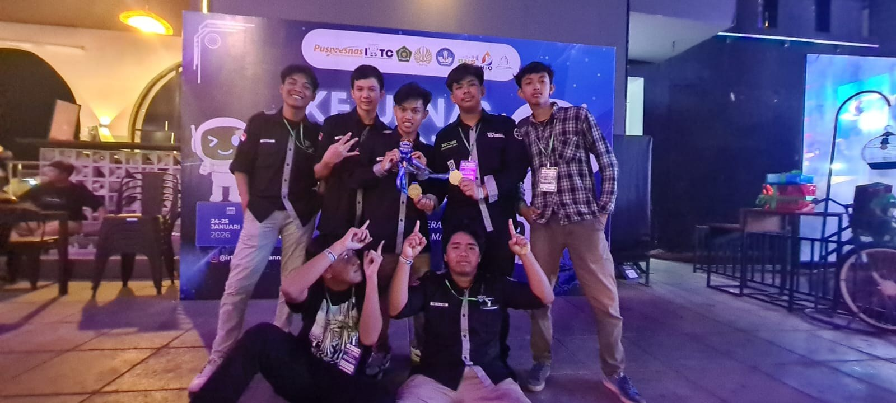
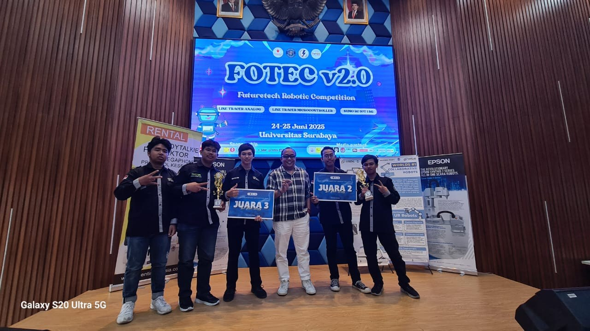

2026/2027 — sekarang
Politeknik Elektronika
Negeri Surabaya
S.Tr. Bisnis Digital
Angkatan pertama, lewat jalur SNBP.
Halo, aku Reihan.
Dari kabel jaringan,
ke layar Figma.
Mahasiswa Bisnis Digital PENS yang lagi pindah jalur dari networking TKJ ke UI/UX dan front-end.
Berawal dari cara jaringan bekerja. Sekarang, penasaran dengan cara manusia menggunakannya.
Dulu aku terbiasa ngoprek kabel jaringan dan ikut lomba robotika waktu sekolah di SMK Negeri 2 Surabaya, jurusan Teknik Komputer dan Jaringan.
Sekarang aku angkatan pertama S.Tr. Bisnis Digital di PENS, masuk lewat jalur SNBP, dan fokus belajar desain antarmuka.
Saat lagi nggak slicing desain Figma ke kode, aku biasanya ngulik tuning IEM, merakit custom mechanical keyboard, atau main Uma Musume.
Satu proyek dulu.
Yang lain menyusul.
Eksperimen pertamaku menerjemahkan alur sistem ke dalam UI.
Tantangannya bukan bikin tampilan yang bagus, tapi bikin alur daur ulang yang rumit secara sistem jadi gampang dipahami. Contohnya setor sampah: pilih jenis sampah, kira-kira beratnya, lalu pilih dijemput atau antar ke drop box. Masih prototipe, tapi tiap langkahnya harus terasa sesederhana mungkin.
(membuka tab baru)Kebiasaan anak TKJ: troubleshoot dulu sampai ketemu akarnya, baru mulai mendesain.
Corat-coret struktur dasar dulu, belum mikirin warna atau detail kecil.
Bikin yang bisa diklik, sambil mikirin gimana komponennya nanti di-coding.
Dari ruang kelas TKJ
sampai arena robotik nasional.
2026/2027 — sekarang
S.Tr. Bisnis Digital
Angkatan pertama, lewat jalur SNBP.
Pendidikan sebelumnya
Teknik Komputer dan Jaringan
Tempat aku pertama kali ngoprek jaringan dan robot.
Peserta kategori LFA/LTA, plus sekali jadi panitia.

Kompetisi robotika tingkat nasional, kategori LFA, 24–25 Januari 2026. Banyak belajar dari persiapan dan dari teman-teman komunitas.
Di foto ini, rekan komunitasku meraih juara 1. Bukan prestasi pribadiku.

Futuretech Robotic Competition di Universitas Surabaya. Belum naik podium secara pribadi, tapi prosesnya ngajarin banyak soal latihan, evaluasi, dan kerja sama.
Di foto ini, rekan komunitasku meraih juara 2. Bukan prestasi pribadiku.
Salah satu lomba robotika pertamaku. Dari sini aku mulai terbiasa sama tantangan teknis, persiapan, dan tegangnya saat bertanding.
Jadi panitia bareng komunitas RCS Robotic SMK Negeri 2 Surabaya. Acaranya di Maspion Mall, dan aku pegang seksi konsumsi serta acara.
Yang sedang kupelajari,
dan yang bikin betah ngulik.
Belajar bikin antarmuka yang bisa dipakai tanpa perlu dijelaskan dulu.
Arah karier yang sedang kutekuni.
Belajar dari dasar, pelan-pelan, supaya desainku bisa jadi halaman yang bisa diklik, bukan cuma gambar di Figma.
Satu baris, satu langkah.
Mouse, keyboard, IEM, gamepad. Suka merakit custom keyboard dan ngulik tuning IEM.
Rasa ingin tahu, versi hardware.
Komposisinya sama, suasananya beda. Coba ganti warnanya.
Masih terus belajar, jadi aku senang ketemu perspektif dan koneksi baru.
Unduh profil singkat